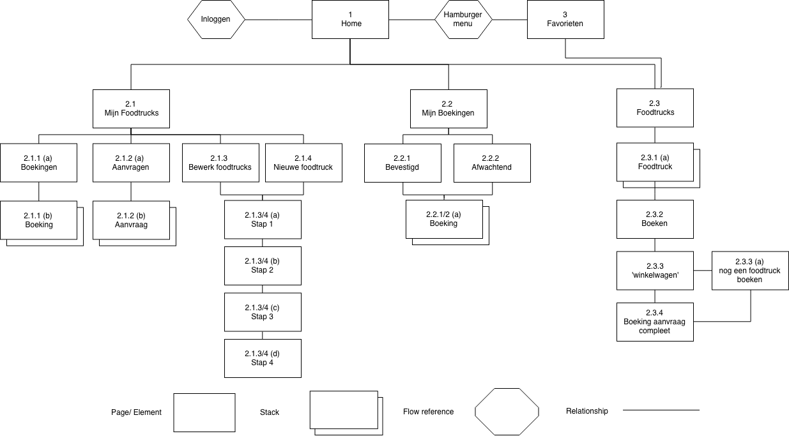
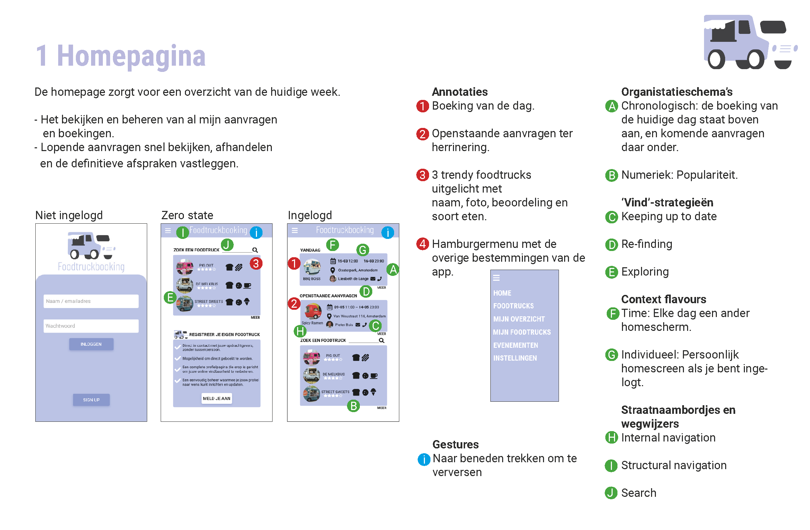
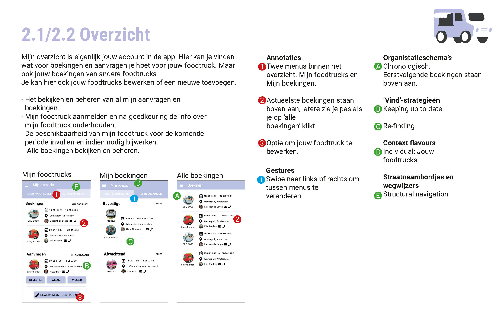
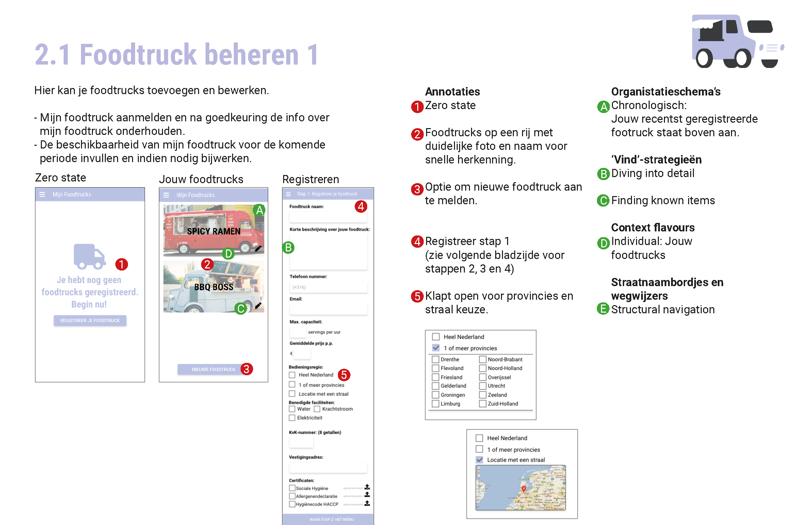
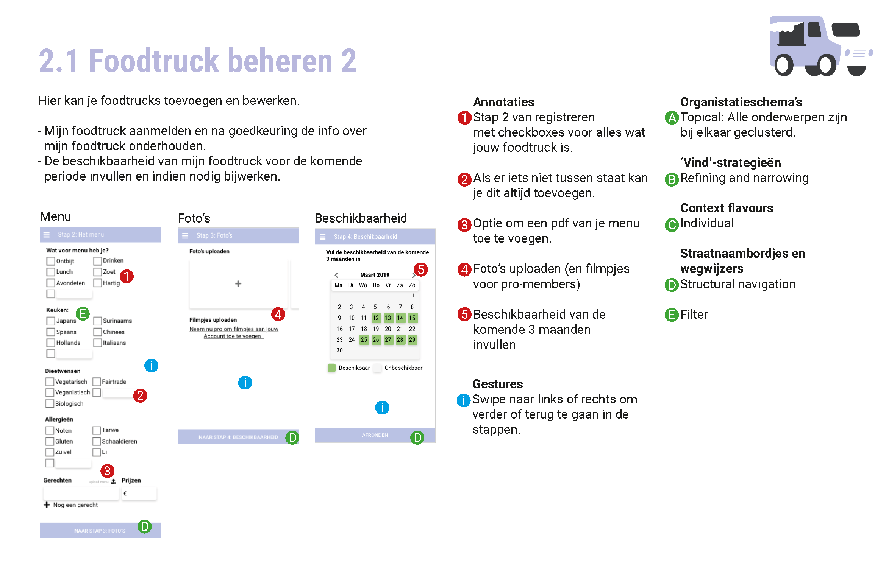
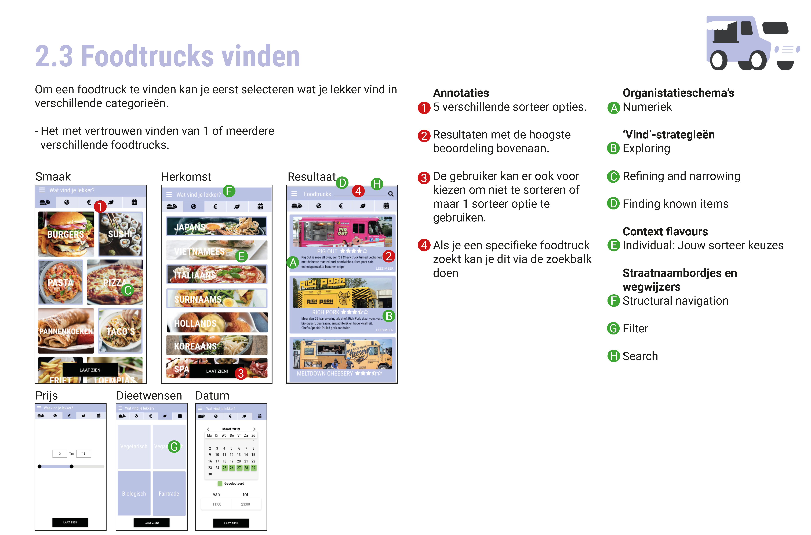
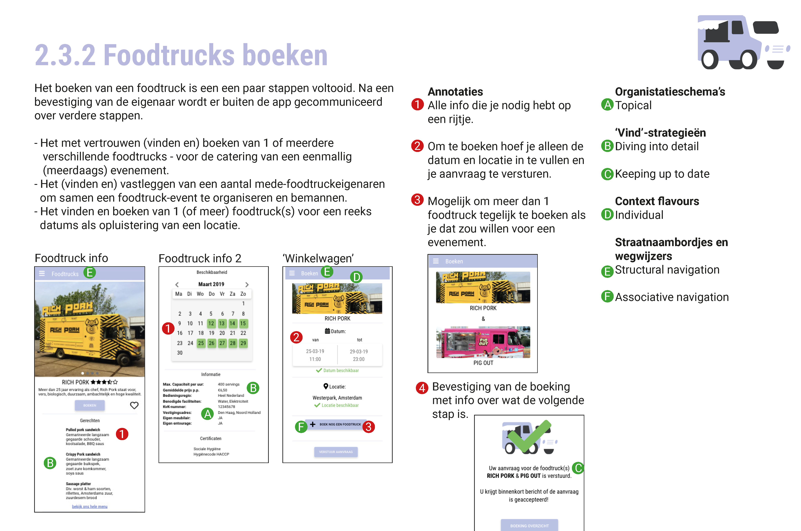
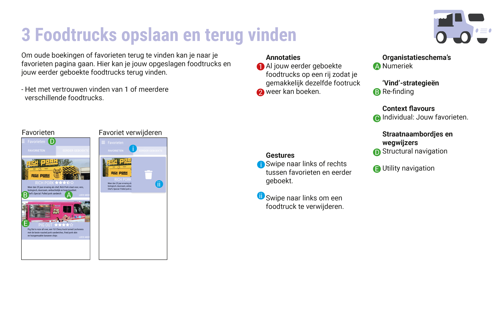

Informatie Architectuur
Vak beschrijving
Tijdens het vak Informatie Architectuur leerde ik hoe ik informatie en functies van een app of website het beste kon structureren en vindbaar kon maken. Met de verschillende ontwerpstratedieën die ik heb geleerd heb ik uiteindelijk de Foodtruckbooking case gekozen om te verbeteren.
Deliverables
- 3 team oefeningen
- Eind Ontwerpopdracht (twee gesprekken)
Eindoplevering
Overzichtdiagram
Het Overzichtsdiagram geeft weer hoe de app gestructureerd is. Het laat zien welke paginas er zijn en hoe je deze kan bereiken.
Homepagina
De homepagina brengt de belangrijkste data naar voren zodat je meteen ziet wanneer je komende afspraken plaats vinden.
Overzicht
Bij 'Mijn Overzicht' krijg je te zien wanneer jouw foodtrucks geboekt zijn en of je nog aanvragen hebt. Ook vind je er foodtrucks die je zelf hebt geboekt.
Foodtrucks beheren
Het beheren van de foodtrucks is te vinden bij 'Mijn Foodtrucks' hier kan je foodtrucks toevoegen, verwijderen en bewerken.
 Foodtrucks vinden
Je hebt de keuze om verschillende categorieën te selecteren en zo de foodtruck die je zoekt te vinden. Alle categorieën zijn optioneel, je kan ook puur zoeken naar een specifieke foodtruck als je deze al kent via de zoekbalk.
Foodtrucks boeken
Bij het boeken van de foodtruck kan je eerst kijken naar alle specificaties van de foodtruck en of deze beschikbaar is op jouw gekozen data. Als je deze eenmaal hebt toegevoegd aan jouw winkelwagen krijg je in de winkelwagen de optie om nog een foodtruck te boeken.
Foodtrucks opslaan en terug vinden
Als je een foodtruck hebt opgeslagen kan je deze gemakkelijk weer terug vinden bij jouw favorieten. Ook kan je eerder geboekte foodtrucks hier weer terug vinden.
Conclusie
Met dit vak heb ik een heleboel geleerd en ik zie in hoe ik nu mijn ontwerpen anders kan doen om het steeds meer te verbeteren. Zelf ben ik erg ontevreden hoe ik dit vak heb afgerond. Als ik iets zou verbeteren zou dat zeker de vormgeving van de app zijn.